Otoinþa veya farklý tekniklerle üretilmiþ modeller yardýmýyla
benzer geometriye sahip (pozitif veya negatif)
fakat daha mukavemetli veya ihtiyaca uygun diðer malzeme
özelliklerine sahip parça veya kalýp üretiminde
kullanýlan birçok teknik ve yöntem (model dönüþtürme
teknolojileri, "conversion technologies") ismi altýnda
toplanabilir.
Aslýnda bu gibi dönüþtürme
yöntemleri uzun yýllardýr biliniyordu ama asýl problem
ilk master modelin hýzlý ve hassas biçimde yapýlabilmesiydi.
Artýk çeþitli otoinþa teknolojileri ile bu problem aþýldýðý
için model dönüþtürme yöntemleri sahasýnda yeni araþtýrma
kapýlarý açýlmýþtýr. Her geçen ay bu konuda yeni patentler
alýnmakta ve yeni yöntemler geliþtirilmektedir.
En yaygýn model dönüþüm
teknolojilerinden olan ve önemine binaen önceki sayfalarda
ayrýca iþlenen hassas döküm
ve silikon kalýplama
teknolojilerine ek olarak, aþaðýda, özellikle hýzlý
kalýp imalatýnda kullanýlan diðer bazý önemli model
dönüþüm teknolojileri açýklanmýþtýr:
Araldit markalý bir
malzeme ile de modelcilikte yýllardýr yaygýn þekilde
kullanýldýðý gibi, bu teknikte model üzerine çift komponentli
epoksi polimer bir harç sývý halde dökülür. Ardýndan
kimyasal bir reaksiyonla polimer baðlarýnýn oluþarak
malzemenin sertleþmesi sonucunda kalýp elde edilir.
Malzeme teknolojisinin geliþmesiyle birlikte hiç boyutsal
deðiþime (çekme, þiþme...) uðramadan sertleþen epoksi
polimer türleri geliþtirilmiþtir. Bu sayede eldeki master
bir modelin kalýbý büyük bir hassasiyetle elde edilebilir.
Vakum altýnda döküm yapýldýðýnda ise daha iyi sonuçlar
alýnabilir.
Mukavemeti daha da arttýrmak
için döküm öncesi epoksi harç içine alüminyum tozu konulabilir.
MCP-HEK gibi bazý malzeme üreticileri bu iþlerde kullanýlmak
üzere aüminyum tozu içeren özel karýþýmlarý pazarlamaktadýr.
Hýzlý bir þekilde üretilebilen
epoksi kalýplar, plastik enjeksiyonda (basýlan mazlemenin
aþýndýrýcýlýðýna, sýcaklýðýna ve kalýbýn geometrisine
baðlý olarak) 5-100 arasý parçanýn basýlabilmesine ve
gerçek seri imalat malzemesinden ilk prototiplerin üretilmesine
olanak verir.
Ayrýca epoksi malzemeler
sac pres/ derin çekme, termoform ve kum döküm maça kalýplarýnda
da kullanýlabilirler.
Ýngiliz tabanlý Swift
Technologies Firmasý, kendi geliþtirdiði ve patentini
aldýðý SPC (Smart Polymeric Composite) isimli bir malzeme
kullanarak alüminyuma yakýn yüksek mukavemete ve dinamik
hafýzaya (esnekliðe) sahip kalýplarý hýzlý olarak imal
edebilmektedir. SPC, deðiþik polimerlerin ve fiber güçlendiricilerin
karýþýmýndan oluþan kompozit bir malzemedir. Swift Technologies,
bu teknolojiyi kullanarak servis vermesinin yanýnda
lisansýný da satmaktadýr. SPC malzemesi akýþkan halde
bir modelin üzerine dökülüp vakum altýnda preslenerek
kýsa sürede yüksek sertliðe ulaþýr ve modelin kalýbý
elde edilmiþ olur. SPC yüzeydeki desen dahil birçok
detayý kopyalayabilecek incelikte bir yapýya sahiptir.
SPC malzemesinden elde edilen kalýplar standart CNC
makinelerinde alüminyumdan 5 kat daha hýzlý iþlenebilirler.
SwiftoolT 50,000 adet PP malzeme enjeksiyonuna dayanacak
bir ömüre sahiptir. SPC kompozisyonu kullaným ihtiyaçlarýna
göre ayarlanabilir.
SPC kompozit malzemesinin mekanik özellikleri aþaðýda
sýralanmýþtýr:
Çekme dayanýmý: 22Mpa
Basma dayanýmý: 1300Mpa
Sertlik: 9.5 Vickers
Özgül kütle: 1.5g/cm^3 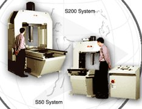
Saðda, Vakum altýnda presleme için farklý vakum
ve pres makineleri geliþtirilmiþtir. Bunun haricinde
farklý karýþtýrma ve dökme makineleri de sisteme dahildir.
Teknolojinin önemli
bir safhasý olan vakum presleme için üç model bulunmaktadýr:
S10 serisi, S50 serisi ve S200 serisi. S10 serisi diðerlerinden
farklý olarak vakum ve pres sistemini beraber içerir.
Aþaðýda,
Ford Puma modelinin çamurluðuna ait bir parçanýn acilen
üretiebilmesi 1 haftada üretilmiþ bir Swiftool kalýbýnýni
malat safhalarý görülmektedir:
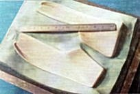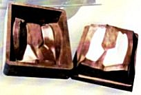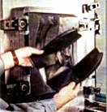
SwiftcoreT Teknolojisi: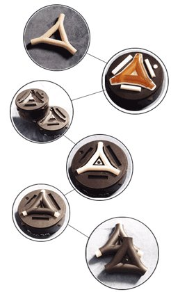
Karmaþýk yapýlý parçalarýn
prototip kalýplarýnýn daha kolay yapýlmasýný saðlayan
bu teknikte önce suda eriyebilen özel bir malzemeden
maça dökülür.
Plastik enjeksiyon sonrasý
plastik parça içinde kalan maça yýkanarak uzaklaþtýrýlýr.
Bu sayede içinde boþluklar bulunan plastik parçalarýn
prototipleri, birçok hareketli maçaya sahip bir kalýp
yapýlmadan da kolayca imal edilebilir.
Saðda, yukarýdan aþaðý
doðru iþlemin safhalarý gösterilmiþtir. Üstte gösterilen
maça, SLA ile inþa edilmiþ bir model kullanýlarak yapýlmýþ
silikon bir kalýba SwiftcoreT malzemesi dökülerek elde
edilmiþtir.
>
3D Keltool:
Keltool teknolojisi orijinal olarak 1976'da 3M Firmasý
tarafýndan geliþtirilmiþtir. Bu teknolojiye ilk zamanlarda
"Tartan tooling" ismi de verilmiþtir. Sonralarý
Keltool firmasý tarafýndan devralýnan bu teknoloji,
1994'den sonra SLA ile imal edilen master modeller ile
birlikte yaygýn bir þekilde kullanýlmaya baþlandýktan
sonra 1996'da 3D Systems firmasý tarafýndan stratejik
görülerek Keltool Inc. satýn alýnmýþ ve bu tekniðin
ismi 3D Keltool olarak deðiþtirrilmiþtir. 3D
Systems bir süre bu teknolojinin lisansýný ve gerekli
ekipman ve malzemeyi bir süre sattýktan sonra 2003 yýlýnda
bu giriþimini durdurmuþtur. 3D
Systems Keltool teknolojisinden elde ettiði bilgi birikimiyle
SLS
Sistemleri için A6 çelik tozunu geliþtirmiþtir.
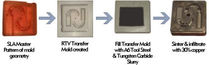
Bu teknolojide önce SLA
ile üretilmiþ kalýp modeli kullanýlarak silikondan bir
ara kalýp dökülür. Sonra bu silikon kalýbýn içine özel
yapýþtýrýcý + metal tozu karýþýmý (A6 takým çeliði ve
tungsten carbit tozu) sývý halde dökülür. Yapýþtýrýcý
sertleþtikten sonra kompozit metal parça çýkarýlýp bir
fýrýnda sinterlenir, sinterleme sonrasýnda kalan gözeneklere
ise bakýr emdirilir (erimiþ bakýr kýlcallýk "capillary"
etkisiyle hava boþluklarýna emilir).
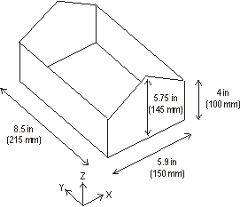
Saðda, 3D Keltool
için maksimum inþa zarfý ölçüleri görülmektedir.
3D Keltool teknolojisine benzer teknikleri kullanan farklý
firmalar ve araþtýrma kuruluþlarý da mevcuttur. 3D Systems
firmasýnýn 3D Keltool Teknolojisi ile boyu yaklaþýk 15-20
cm'yi geçmemesi þartýyla, milyondan fazla plastik basabilecek
dayanýmda, karmaþýk geometriye sahip metal kalýp mühreleri
kolaylýkla ve çok sayýda üretilebilir.
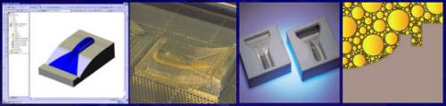
1
2
3
4
1- CAD ile kalp
tasarýmý, 2- SLA cihazý ile kalýp modelinin inþasý,
3- Silikon kalýp, 4- karýþýmda bulunan deðiþik
boydaki tanecikler çok prüzsüz bir yüzey saðlar.
5- Geçici olarak
baðlanmýþ tozlardan oluþan kalýp mühresi. 6- Mühreler
sinterleme ve infiltrasyon için fýrýna veriliyor. 7-
Mühreler plastik enjeksiyon tezgahýna baðlanmýþ (bu kalýbýn
daha büyük ve farklý bir resmini görmek için resmi týklayýnýz)
8- Üretilmiþ plastik parçalar.
3D
Keltool® Malzeme Özellikleri:
Rockwell
sertliði: Rc 50 (ýsýl iþlem sonrasý)
Çekme mukavemeti: 735 MPa
e-Modulus: 184 GPa
Özgül Kütle: 8,3 kg/dm³
Yüzey pürüzlülüðü: Rz=0,4
Ek iþlemler: Kaynak, elektroerozyon ve parlatmaya uygunur
Hassasiyet: +/- %0.2
Sinterleme sonrasý lineer ve isotropik çekme miktarý:
%0.6
3D Keltool Uygulama
örnekleri:
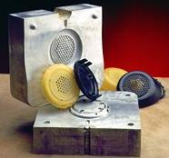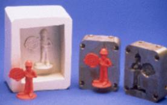
Solda, Boss Firmasý
için yapýlan kalýp görülmekte (Santin Engineering, ABD)
Saðda, Frantz
firmasýnýn (ABD) ürettiði promosyonel parça kalýbý.
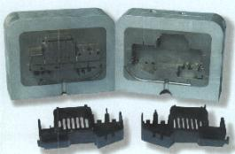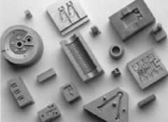
Solda, Protocam (ABD)
firmasýndan bir 3D Keltool örneði. Saðda, çeþitli mühre
örnekleri görülmekte.
ABD'nde
Simeon Bojilov tarafýndan geliþtirlen ve 1999 yýlýnda
NDM Inc. (New Design Models Inc. Syracuse NY, eski adresi:
www.ndm-inc.com) bünyesinde ticari hale gelen bu proses,
daha kýsa sürede daha büyük kalýplarýn imalatýna izin
verebilmesi bakýmýndan Keltool'a kýyasla belli avantajlara
sahiptir.
2003 sonunda NDM Inc. SDI
(Sanders Design International Inc.) ve B&D Sales
(www.bdsales.com)
ortaklýðý tarafýndan satýn alýnmýþ ve ilk kez Euromold
2003 fuarýnda sergilenmiþtir. Bu iþbirliði sonucunda
SDI firmasýnýn Rapid ToolMaker sistemiyle üretilen master
modeller kullanýlarak seri imalat þartlarýnda kullanýlabilecek
metal plastik enjeksiyon kalýplarý üretilebilmektedir.
Keltool
prosesine benzer þekilde Bojilov prosesinde de master
bir model üzerinden elde edilen kauçuk kalýba metal
tozu + yapýþtýrýcý karýþýmý dökülerek kalýbýn sinterlemeye
hazýrlanmasý saðlanýr. Yalnýz bu prosesde paslanmaz
çelik tozu (P420) kullanýlmaktadýr.
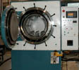Ýki
safhadan oluþan bu prosesde sinterleme sonrasý oluþan
%1.3 lineer büzülmeyi kompanse etmek için önceden master
modeller ayný oranda daha büyük inþa edilir. Saðdaki
resimde görüldüðü gibi, sinterleme vakum altýnda ve
özel geliþtirilmiþ bir fýrýn içinde "inert"
gaz ortamýnda hýzlý bir þekilde yapýlýr. Sinterleme
sýrasýnda tozlar arasýnda kalan boþluklara bronz emdirilir.
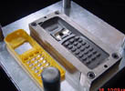Sonuçta,
1 milyon plastik parça basabilecek dayanýmda (P20 çeliðine
muadil sertlikte 32-34 Rockwell) paslanmaz çelik/ bronz
karýþýmlý kompozit metal bir kalýp elde dilmiþ olur.
Bu prosesin limitlerinden dolayý kalýp mührelerinin
200x165x75mm ebadýndan daha büyük olmamasý gerekir.
Saðda, bu prosesle imal edilmiþ bir cep telefonu kalýbý
ve plastik enjeksiyonla imal edilmiþ bir parça görülmektedir.
IVF
(http://ivf.se),
Ýsveç Ýmalat Mühendisliði Araþtýrma Enstitüsü tarafýndan
geliþtirlen ve Ýsveç tabanlý servis bürosu Prototal
detsteðiyle pazarlanan MetalCopy teknolojisi Keltool
ile büyük benzerlik göstermektedir... MetalCopy, 100
bin adede kadar ömrü olan karmaþýk geometriye sahip
plastik enjeksiyon kalýplarý imalatý için uygundur.
>
Plaster metal döküm:
Kum döküme benzer bu yöntem,
genellikle alüminyum veya diðer paslanmaz ve düþük sýcaklýkta
eriyen metal alaþýmlarýnýn pres döküm ile elde edilen
parçalarýna muadil prototipler üretmek için kullanýlýr.
Seri imalatta kullanýlan pres döküm kalýplarý yüksek sýcaklýða
ve basýnca dayanýklý çelik alaþýmlarýndan yapýlýrken,
prototip amaçlý kullanýlan plaster kalýplar ise %70 alçý,
%30 mukavemet arttýrýcý karýþýmdan dökülür. Alçýdaki gözenekli
yapý hem ýsý yalýtýmýný arttýrýr hem de döküm gazlarý
için geçirgen bir ortam saðlar, bu da döküm yüzey kalitesini
arttýrýr. 0.1mm'ye varan hassasiyetle döküm yapýlabilir.
Gerektiði durumda yine plaster malzemeden maça da yapýlabilir.
Döküm sonrasý maçalar mekanik darbe ve/veya su tazyiki
ile temizlenir.
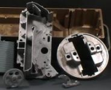Duruma
göre 1000 adete kadar metal parça imali ekonomik yönden
uygundur. Daha fazla parça gerekiyorsa çelik alaþýmdan
pres döküm kalýbý yapmak daha hesaplýdýr. Saðda,
plaster kalýba dökülerek elde edilmiþ metal parçalar görülmekte.
(ref: www.metalcast.com)
Plaster kalýplarýn ýsýyý az iletmesi sayesinde 0.5mm'ye
kadar varan ince cidarlý metal dökümler kolaylýkla yapýlabilmektedir
(dökülen sývý metal, hassas
kabuk dökümde olduðu gibi çabuk soðuyup akýcýlýðýný
yitirmeden evvel ince aralýklara dolar)
Plaster kalýba döküm
yöntemiyle metal prototip parçalar elde edilebileceði
gibi prototip metal plastik enjeksiyon kalýplarý da
direkt olarak üretilebilir:
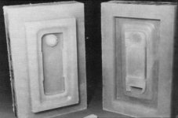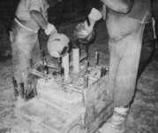
Solda, SLA master
modeli üzerine dökülerek elde edilmiþ silikon kalýp.
Bu kalýp üzerine ise plaster dökülüp sonrasýnda fýrýnlanýp
kurutularak metal kalýbý elde edilir. Saðda,
plaster metal kalýbýna alüminyum dökümü görülmekte.
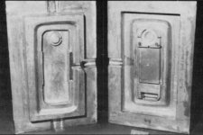
Saðda, yüzey parlatmasý
sonrasý plastik enjeksiyon makinesine baðlanmaya hazýr
Al kalýp görülmekte. (ref: www.metalcast.com)
Plaster
döküm tekniði 1948 yýlýndan beri kullanýlmakta ve orijinal
olarak otomotiv endüstrisinde kalýp imalatý için geliþtirilmiþtir.
1973 yýlýnda, plasterin kalýplanmasýnda üretan (urethan)
lastikler kullanýlmaya baþlanmýþtýr. 1980 yýlýnda suya
karþý dayanýmlý üretanlarýn geliþtirilmesiyle bu tekniðin
hýzlý prototip ve kalýp imalinde kullanýlmasý büyük
ölçüde artmýþtýr.
Ýkinci uygulamaya güzel
bir örnek olarak ayakkabý taban kalýplarý imalat tekniði
gösterilebilir. Dünyada yaygýn olarak kullanýlan bu
teknikte önce taban modeli hazýrlanýr (el iþçiliði,
CNC iþleme veya otoinþe teknikleri ile) model üzerine
istenilen desenleri vermek için ince lastik tabakalar
yapýþtýrýlýr. Silikon kalýplama ile modelin negatifi
çýkarýlýr. Silikon kalýp içine plaster dökülerek modelin
alçýsý elde edilir. Ayrýma yüzeyleri belirlendikten
sonra model üzerine alüminyum dökülür. Kalýbýn diðer
yarýsý için de ayný iþlem tekrarlanýr ve alüminyumdan
poliüretan enjeksiyon kalýbý elde edilmiþ olur.
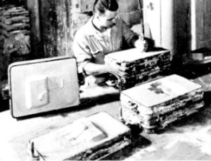Saðda,
bir plaster döküm kalýbý hazýrlanýþý görülmektedir.
Plaster döküm yöntemi paslanmaz malzeme dökümüyle sýnýrlýdýr.
Aksi halze alçý içindeki sülfür dökülen metal ile reaksiyona
girer. Plaster dökümde genellikle alüminyum alaþýmlarý,
sarý pirinç, çinko, magnezyum alaþýmlarý ve bakýr kullanýlýr.
Saðda,
ThermoJet ile imal edilmiþ kalýp modelleri ve MCP-HEK
sistemi tarafýndan hassas dökümle alüminyumdan elde
adilmiþ kalýp mühreleri görülmektedir. Saðdaki resmin
altýnda döküm sýrasýnda erimiþ alüminyumun aktýðý huni
þeklindeki yolluk da görülmektedir.
Elektrot kullanmadan
plastik bir modelin üzerine bakýr kaplanabilir. Daha
sonra bu model, elektroerezon cihazlarýnda elektrot
olarak kullanýlarak en sert çelik dahi oyulabilir...
Örneðin stereolitografi
tekniðinde epoksi fotopolimer reçineyle elde edilen
bir elektrod modelinin üzerine bakýr kaplanarak bu direkt
elektroerozyon iþleminde kullanýlabilir. Yalnýz elektroerozyon
þartlarý iyi kontrol edilmeli, yüzeyde çabuk aþýnma
ve aþýrý ýsýnma önlenmelidir. Aþýrý ýsýnma arkadaki
epoksi modele zarar vererek kaplamanýn bozulmasýna veya
dökülmesine sebep verebilir.
STL
modellerin üzeri elektrokimyasal metodlarla kalýn (~5
mm) bir nikel tabakasý ile kaplanýp (nickel electroforming)
arkasý ise oda sýcaklýðýnda sertleþen seramik malzemelerle
doldurulabilir. Bu teknik özellikle büyük boyutlu kalýplar
için müsaittir.
1994'de
faaliyete baþlayan ABD tabanlý CEMCOM firmasý nikel
elektroform
tekniðini NCC (Nickel Ceramic Composite) adý altýnda
geliþtirerek kaplama sonrasýnda dolgu malzemesi olarak
nikel tozu içeren seramik bir malzeme kullanmýþtýr.
Bu teknikte master model olarak stereolitografi ile
inþa edilmiþ kalýplar kullanýlmaktadýr. 1999'da faaliyetini
sona erdiren CEMCOM'a ait "NCC tooling" teknolojisini
RePliForm Inc. satýn alarak ve hýzlý kalýp imalatý konusunda
servis vermeye baþlamýþtýr.
MCP-HEK
GmbH firmasýný geliþtirdiði "Metal Spray Mould System"
ismi verilen metal sprey kalýp imalat sistemi kullanýlarak
modellerin üzeri tutya benzeri bir Alüminyum alaþýmý
ile kaplanýr. Alaþýmýn erime sýcaklýðý modelden fazla
olmasýna raðmen püskürtme tekniðinin özelliði sayesinde
modele zarar gelmeden kaplama gerçekleþir. Daha sonra
kalýbýn arkasý gerekirse soðutma borularý döþendikten
sonra Alüminyum-Epoxy karýþýmý bir dolgu malzemesi ile
desteklenir. Bu yöntemle elde edilen kalýplar 30bin
ile 40bin defa kullanýlmaya müsait olabilirler: Aþaðýda
soldaki resimde metal püskürtme tabancasý ve
çalýþma þekli görülmektedir. Tabanca ucundaki memeden
beslenen metal alaþýmlý tel, elektrik arký ile eritilip
hava basýncý ile yüzeye püskürtülür. Aþaðýda saðda,
ayakkabý taban kalýp imalatýnda baþarýlý bir uygulama
sahasý bulan bu teknolojiyle üretilmiþ taban kalýbý
ve tabanlar görülmektedir.
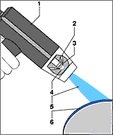1-
Sprey tabancasý
2- Hava memesi
3- Memeye beslenen metal
teller.
4- Elektrik arký
5- Erimiþ metal spreyi
6- Model yüzeyine kaplanmýþ
ve soðumuþ metal alaþým
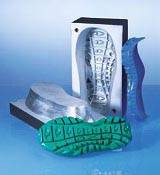
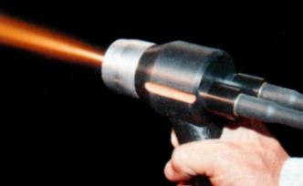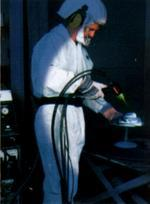
Solda, Spray
tabancasý çalýþýrken, saðda ise master model
üzerine sprey ile metal kaplanýrken görülmektedir.
Ford,
1990 yýlýnda, Sprayforming teknolojisini ilk bulan Ýngiltere'deki
Sprayform Holdings Firmasý'ný bünyesine katarak bu teknolojiyi
daha da geliþtirmeye baþlamýþtýr. Bu teknik ile kalýp
imalatý þu safhalardan oluþur:
1- Otoinþa teknolojileri veya diðer herhangi
bir metodla imal edilen bir kalýp modelinin üzerine
seramik bir malzeme dökülerek negatif bir kalýp elde
edilir. Bu seramik kalýp soðuk bir ortamda dondurularak
kristal bir yapý oluþturulur. Ardýndan piþirilip kurutularak
dayanýklý bu kristal yapýnýn kalýcý olmasý saðlanýr.
Bu proses klasik seramik sinterlemesi deðil, çok daha
ucuz bir prosesdir. Ayrýca sinterleme prosesindeki gibi
çekme (büzülme) gerçekleþmez. Bu sayede model hassas
bir þekilde seramik negatife çevrilmiþ olur.
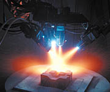2-
Seramik negatif kalýbýn üzerine tel halinde beslenen
metal malzeme elektrik arký ile eritilerek püskürtülür.
Bu, bir sanayi robotu ucuna baðlanmýþ 4 adet sprey kafasý
ile yapýlýr. Yaklaþýk 1m x 1m ebadýnda yüzeylere bir
seferde 76mm kalýnlýða kadar metal kaplanabilir. Kaplama
esnasýnda kýzýlötesi kameralarla yüzey sýcaklýðý sürekli
ölçülerek sprey parametreleri bilgisayar yardýmýyla
otomatik olarak kontrol edilir. Bu sayede çatlama veya
büzülme problemi yaþanmadan kalýn metal tabakalar hýzlý
bir þekilde kaplanabilir.
3- Kaplama sonrasý oluþan kalýn metal kabuk seramik
kalýptan ayrýlýr. Elde edilen metal kabuðun arkasý epoksi
ve diðer uygun malzemelerle doldurulduktan sonra ana
kalýp gövdesine baðlanýr. Bu þekilde klasik talaþlý
imalata nazaran %30-50 arasýnda daha hýzlý ve düþük
maliyetli olarak dayanýklý bir kalýp elde edilmiþ olur.
Ford
bu teknolojiyle çok baþarýlý uygulamalar yaptýktan sonra
artýk kendisi geliþtirmeye devam etmek yerine lisans
vermeye baþlamýþtýr. Ýlk lisans Praxair Surface Technologies
(Indianapolis, IN www.praxair.com)
firmasýna verilmþtir. Bu firmanýn bir yan kuruluþu olan
Tafa Inc. (Concord, NH) bir süre Almanya tabanlý MCP
ile iþbirliði içinde düþük ergime sýcaklýðýna sahip
bir metal sprey teknolojisini de pazarlamýþtý. Daha
sonra 2001 yýlýnda ayný teknoloji The American Tooling
Center (Grass Lake, MI) ve Ceradyne (Costa Mesa, CA
www.ceradyne.com)
firmalarýna da lisanslanmýþtýr.
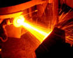ABD'nde
Idaho National Engineering and Environmental Laboratory
(INEEL www.inel.gov)
tarafýndan geliþtirilen RSP (Rapid Solidification Process
- çabuk soðuma prosesi) hýzlý kalýplama tekniði ile
seramik bir master model üzerine nitrojen gazý bulunan
bir oda içinde ergimiþ metal püskürtülerek kalýp imal
edilir. Bu teknoloji RSP Tooling LLC tarafýndan ticari
hale getirilmiþtir. Daha çok alüminyum enjeksiyon kalýplarý
imalatýna uygun olan bu teknik ile parmak izi dahil
model üzerindeki en küçük detaylar kopyalanabilmektedir.